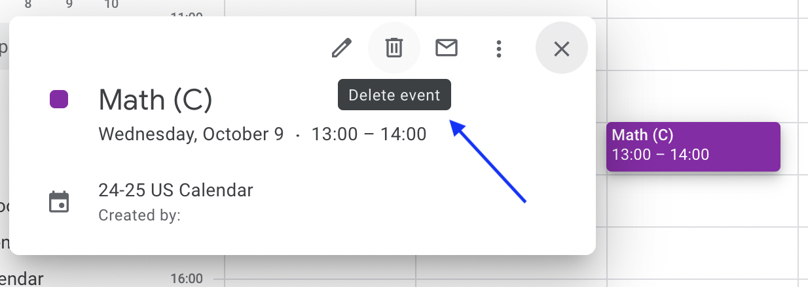
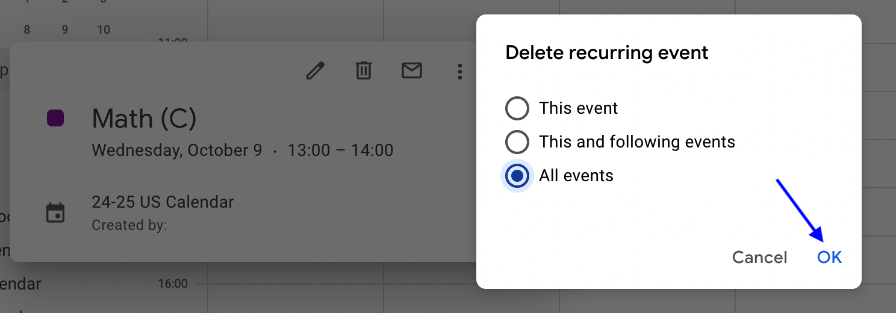
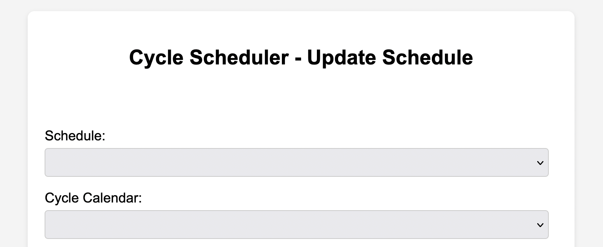

How to Use the Cyclone Google Calendar Workspace Add-On
Cyclone can repeat events on any Calendar that gives you edit privileges.
All settings are preserved for repeated events.
Use Cyclone: Scheduler to Add/Delete a Repeating Event on Google Calendar.
-
Repeat an event every cycle day.
- Click on the Cyclone icon in the Google Calendar side panel to open Cyclone.

If you don't see the Google Calendar side panel, click on the Show Side Panel tab located on the bottom right of Google Calendar: - Click on the event you'd like to repeat every cycle day.

- Cyclone will offer options for repeating the event.

- Select a schedule to define cycle days, special days, and holidays for the repeating event.

- Select to repeat event every cycle day.

Note: Events will not repeat on special days or holidays. - Select the last day the event should repeat.

Repeating events can only be scheduled within the date range specified by your selected schedule. - Click "Repeat Event".
A confirmation message should appear once the recurring events have been added to your Calendar. You may have to refresh your web browser to see the newly populated events:

- Click on the Cyclone icon in the Google Calendar side panel to open Cyclone.
-
Repeat an event every other cycle day.
- Click on the Cyclone icon in the Google Calendar side panel to open Cyclone.
If you don't see the Google Calendar side panel, click on the Show Side Panel tab located on the bottom right of Google Calendar: - Click on the event you'd like to repeat every other cycle day.
- Cyclone will offer options for repeating the event.
- Select a schedule to define cycle days, special days, and holidays for the repeating event.
- Select to repeat the event every other cycle day.
Note: Events will not repeat on special days or holidays. - Select the last day the event should repeat.
Repeating events can only be scheduled within the date range specified by your selected schedule. - Click "Repeat Event".
A confirmation message should appear once the recurring events have been added to your Calendar. You may have to refresh your web browser to see the newly populated events:
- Click on the Cyclone icon in the Google Calendar side panel to open Cyclone.
-
Repeat an event every Monday - Friday school day.
This Cyclone option can be a useful way to avoid Calendar clutter resulting from "ghost" events on days that classes don't meet, like: Thanksgiving Break, Winter Break, Spring Break, or Faculty Work Days.
- Click on the Cyclone icon in the Google Calendar side panel to open Cyclone.
If you don't see the Google Calendar side panel, click on the Show Side Panel tab located on the bottom right of Google Calendar: - Click on the event you'd like to repeat every non-holiday Monday - Friday.
- Cyclone will offer options for repeating the event.
- Select a schedule to define cycle days, special days, and holidays for the repeating event.
- Select to repeat the event every school Monday - Friday.
Note: Events will not repeat on special days or holidays. - Select the last day the event should repeat.
Repeating events can only be scheduled within the date range specified by your selected schedule. - Click "Repeat Event".
A confirmation message should appear once the recurring events have been added to your Calendar. You may have to refresh your web browser to see the newly populated events:

- Click on the Cyclone icon in the Google Calendar side panel to open Cyclone.
-
Repeat an event that moves with a rotating period.
Some schedules have rotating or cascading period timings. For instance, a 6th period class can meet in the afternoon on Mondays, Tuesdays, and Thursdays, but rotate to meet in the morning on Wednesdays and Fridays in order to accommodate student early dismissals for Athletics.
Cyclone accommodates rotating periods by prompting you to indicate whether you'd like a repeating event to follow the rotation.
- Open Cyclone, then click on an event to repeat.
- If the event overlaps with a rotating period extra prompts appear to specify how to handle rotating period times.

Cyclone will offer a prompt on either side of the rotating period:
- Deselect the option to repeat with period labels for events that should ignore rotating period times.

This indicates that the event should repeat at the same time every cycle day, irregardless of the rotating period. - Events that move with a period label can specify new meeting times for the event..

This indicates that an afternoon event will occur from 7:55am - 8:55am when the period rotates to the morning. - Click "Repeat Event".
Events populate on a Calendar according to the period rotation pattern specified by the selected schedule.


This schedule has a 6th period which meets in the afternoon on Mondays, Tuesdays, and Thursdays. 6th period rotates to meet in the morning on Wednesdays and Fridays in order to accommodate student early dismissals for Athletics.
- Open Cyclone, then click on an event to repeat.
-
Delete an event created with Cyclone.
Cyclone-created events can be deleted through the standard Google Calendar interface.
- Click on the event you'd like to delete.

- Click on the trashcan icon.
 - Specify whether you'd like to delete the single event, the event and all following connected events, or all connected events both before and after this event.

- Click "OK".

All connected event(s) will be removed from your calendar.
- Click on the event you'd like to delete.
Use Cyclone: Almanac to generate planners and meeting analytics.
-
Generate meeting statistics.
- Expand the Cyclone: Almanac card section.
- Select the calendars, start date, end date, and minimum number of meetings for the events you'd like to analyze.
- Click the "View Stats" button.
Cyclone will generate a summary of the number of meetings, total time spent across all meetings, and a break down of the number of meetings for each weekday and cycle day.
- Expand the Cyclone: Almanac card section.
-
Generate a printable planner.
Cyclone Almanac can quickly generate a printable planner with any collection of events.
- Generate stats for events given your chosen calendars, start date, end date, and minimum number of meetings.
- Deselect events that you don't want to include in your planner.
- Click the "Generate Planner" button.
- Make a copy of the Google Sheets planner to customize or print. A sample planner is shown below:


Configure Cyclone for your Google Workspace.
-
Configure a cycle-based schedule for Cyclone. (Google Workspace Admin)
After installing Cyclone as a Workspace Add-On, a Google Workspace Admin can configure a unique cycle-based schedule though an intuitive web interface.
For organizations with multiple calendars (ie. schools with multiple divisions), this process is repeated for each unique cycle schedule.
- Visit the Cyclone Configuration Web Interface, then select a Google Calendar to define a cycle schedule.

Cycle days are defined by Google Calendars with All-Day events to match a particular cycle label.

- Cyclone will pre-populate calendar start date, end date, cycle labels, and non-cycle labels.

- Add/delete cycle labels and non-cycle labels as needed.

- Indicate your time zone, and select optional rotating meeting configurations, then click "Submit".
- Use the color-coded feedback to verify your cycle schedule is correct.

- All workspace users can now select this schedule as an option for repeating events.

- Visit the Cyclone Configuration Web Interface, then select a Google Calendar to define a cycle schedule.